Scheda del ruolo: Tutor interno
Obiettivo
Sei il docente che conduce la pratica. La crei, la fai avanzare da uno stato all'altro, invii i link di firma, avvii e chiudi il periodo e alla fine la completi. Quasi tutti i passaggi passano da te, quindi sei quello che più spesso aspetta gli altri e che più spesso vede il portale fermarsi con un elenco di motivi.
Cosa fare, passo per passo
La pratica e l'azienda
- Dal menu Pratiche FSL (1 nell'immagine) premi + Nuova pratica.
- Scegli lo studente (1 nell'immagine seguente), l'azienda (2), sede e tutor aziendale. Lascia vuote le date: il portale usa quelle della classe. Scrivi la mansione (3) e premi Crea la bozza (4). I dati esatti sono nel copione del tuo gruppo.
- Dal dettaglio della pratica premi Invia in validazione azienda.
- Prova a premere Azienda idonea → progettazione. Il portale non avanza e elenca cosa manca (1 nell'immagine): la scheda dei rischi dell'azienda, firmata dal legale rappresentante.
- Dal menu Aziende apri l'azienda e, nel riquadro delle schede rischi, premi + Invia scheda rischi (1) e poi Invia il link (2). Il legale rappresentante riceve una email.
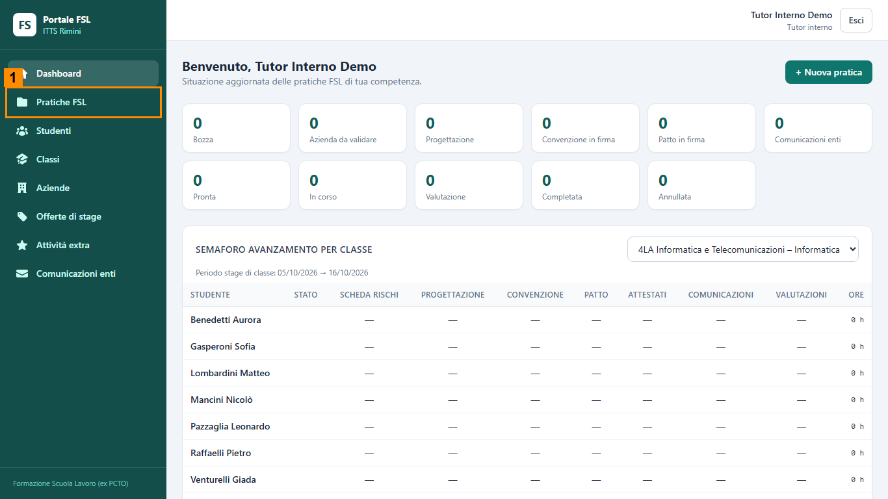
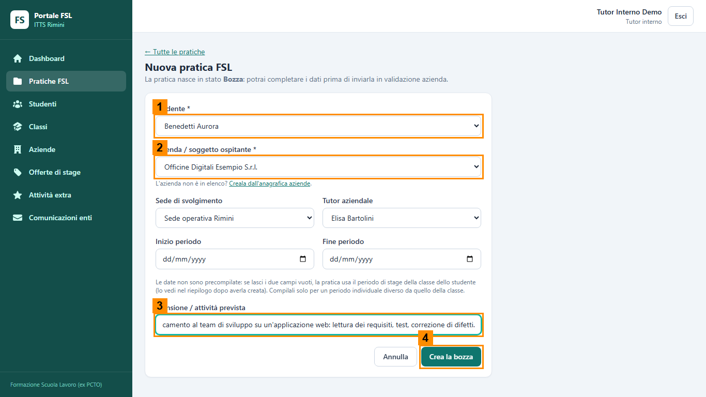
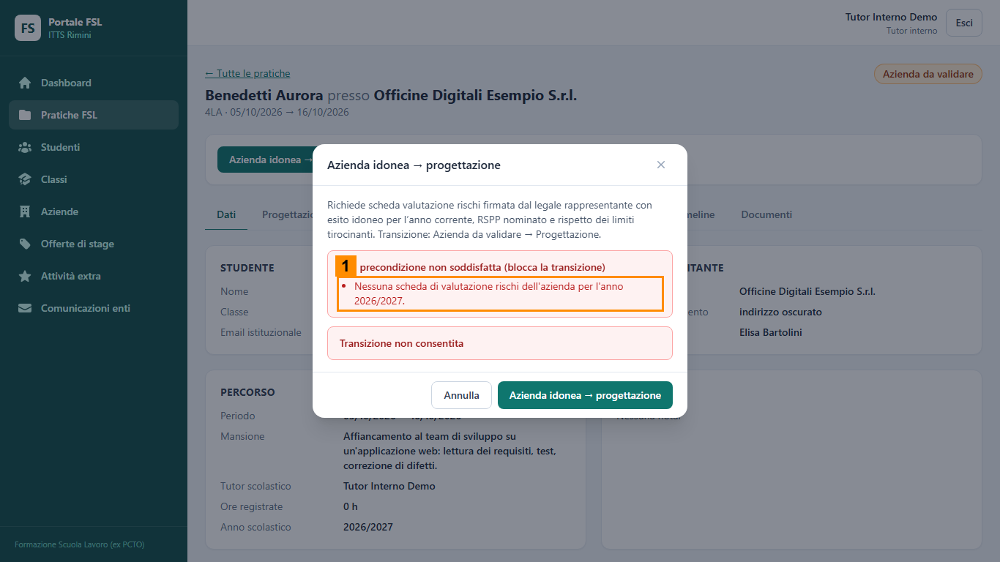
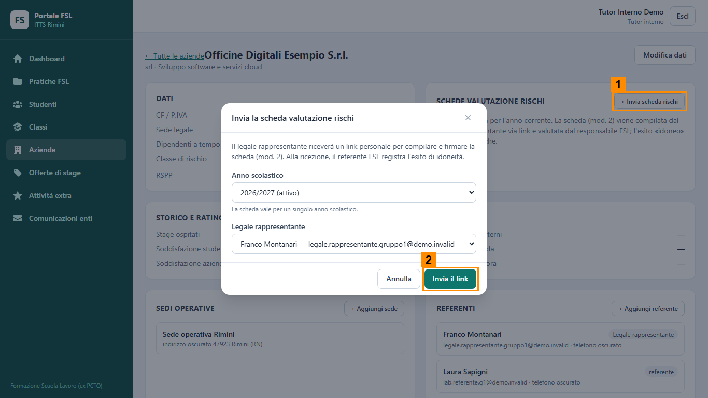
Progettazione e convenzione
- Quando la pratica è in Progettazione, prova subito Avvia la firma della convenzione: compare l'elenco di cosa manca (scheda, attestati, convenzione).
- Scheda Progettazione: compila «Attività previste in azienda» e premi Salva la scheda (1 nell'immagine).
- Quando la Segreteria ha segnato gli attestati, scheda Firme e convenzione: Genera la convenzione (1 nell'immagine) e conferma nella finestra.
- Premi Avvia la firma della convenzione, poi Invia i link di firma e Invia i link: parte il secondo link del legale rappresentante. Il Dirigente firma dal portale.
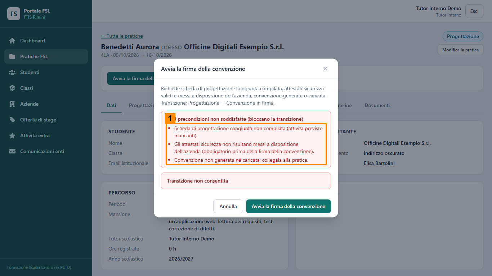
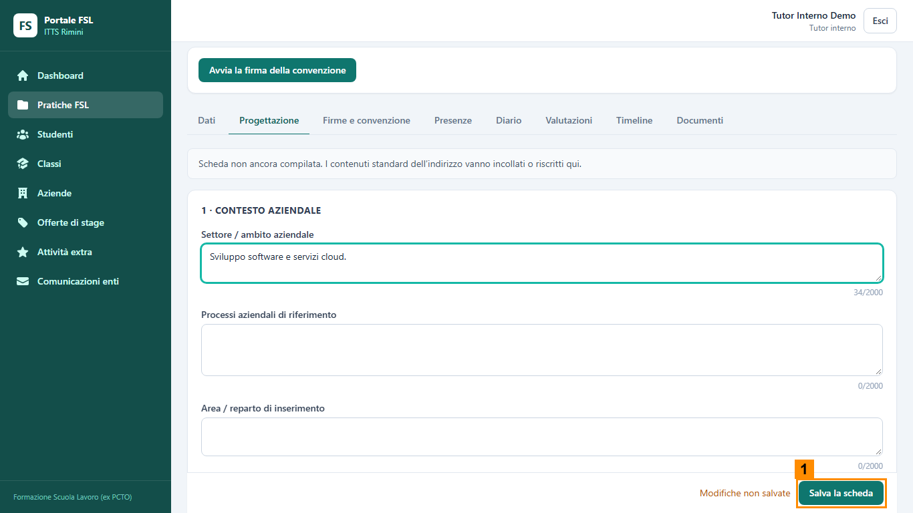
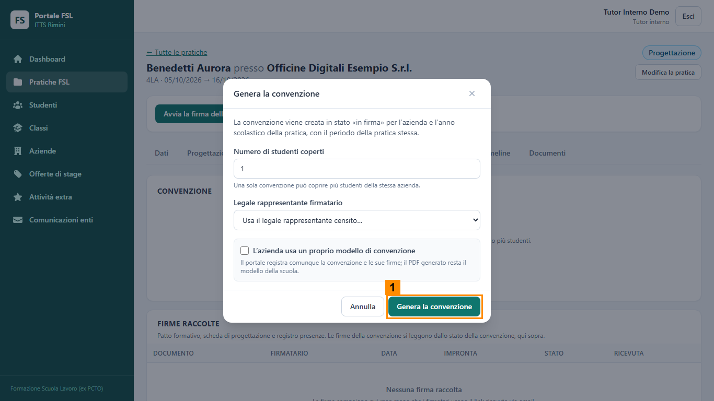
Patto formativo e firme
- Con la pratica in Patto in firma premi Invia i link di firma: partono i link ai genitori e al tutor aziendale.
- Quando hanno firmato, scheda Firme e convenzione: Firma la scheda di progettazione.
- Guarda l'elenco Firme raccolte (1 nell'immagine). Con l'ultima firma la pratica passa da sola a «Comunicazioni enti».
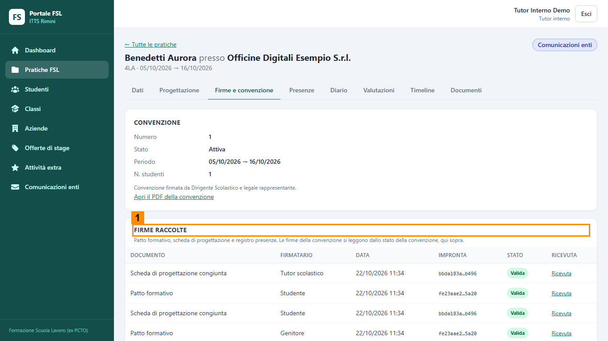
Comunicazioni, presenze e chiusura
- Dal menu Comunicazioni enti scegli la classe (1) e premi Genera batch (2), il bottone che prepara in un colpo solo il gruppo di comunicazioni agli enti. Compaiono le righe INAIL e DPL; alla Segreteria spetta la registrazione dell'invio.
- Quando la Segreteria ha portato la pratica a «Pronta», premi Avvia il percorso.
- A presenze e diario compilati e confermati premi Chiudi il periodo → valutazione.
- Quando il tutor aziendale ha firmato il registro: scheda Presenze, riquadro Chiusura del registro, Chiudi e firma il registro (2 nell'immagine).
- Premi Completa la pratica. Se il portale si ferma, leggi i motivi: sono scritti in rosso.
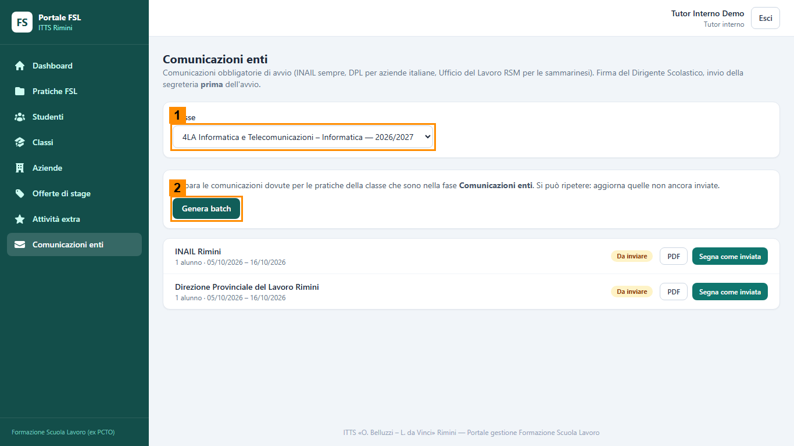
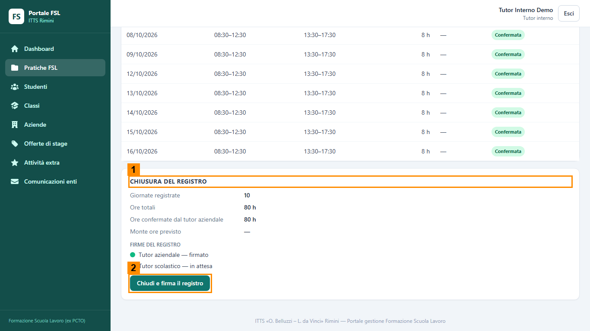
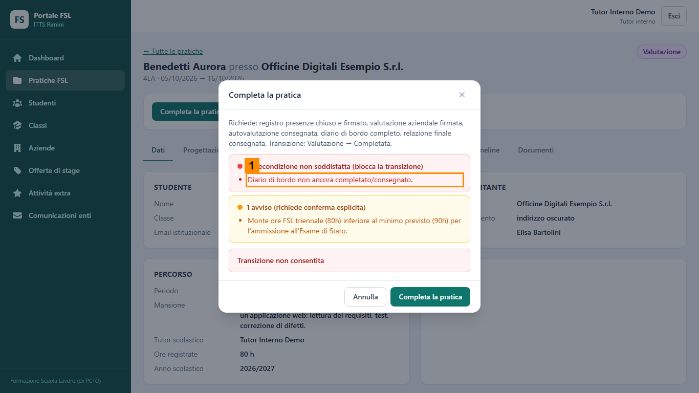
Cosa controllare
- Dopo ogni passaggio lo stato in alto a destra è quello atteso.
- Prima di premere un bottone di avanzamento sai cosa deve essere stato fatto da altri ruoli.
- Quando il portale si ferma, hai letto il motivo e hai capito chi deve intervenire.
- Gli avvisi gialli non bloccano ma vanno confermati con Confermo nonostante gli avvisi: sai dire perché un errore si corregge e un avviso si accetta.
- Hai premuto Esci quando hai finito.